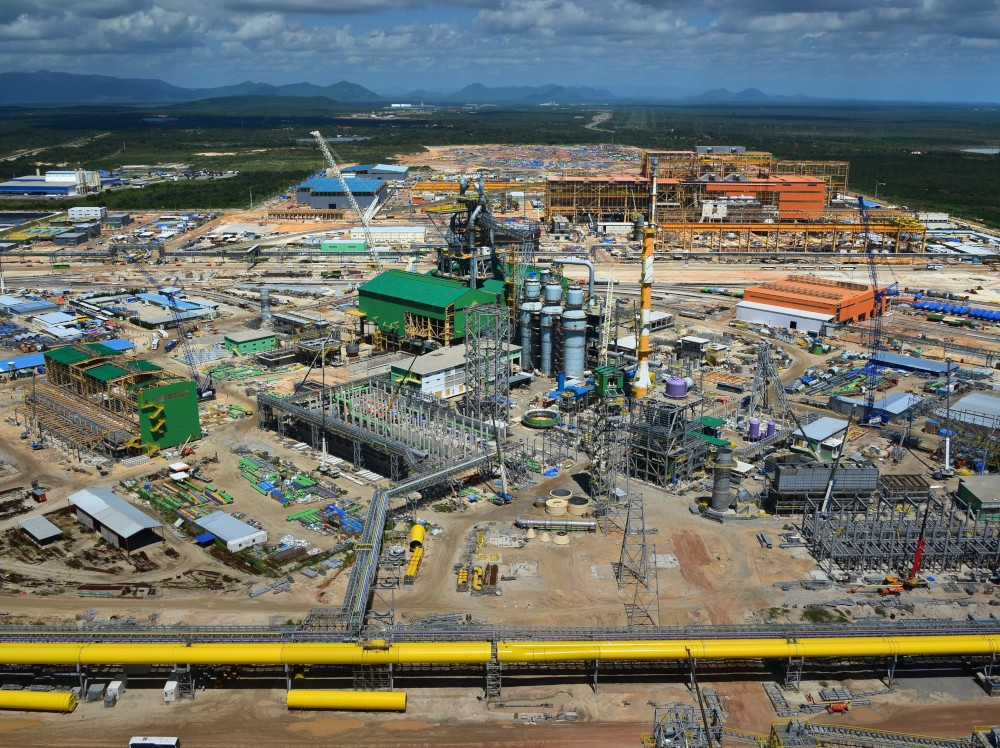

AVALIAÇÃO DE DESEMPENHO DE EMPRESAS ESPECIALIZADAS EM CONSTRUÇÃO DE PLANTAS INDUSTRIAIS:
GESTÃO DE INDICADORES AMBIENTAIS
Monografia de conclusão de curso apresentada ao curso de Engenharia Ambiental e Sanitária da Universidade de Fortaleza como requisito parcial à obtenção do título de bacharel em Engenharia Ambiental e Sanitária.
Orientador: Professora Doutora Adriana de Oliveira Sousa Leite